Canicule, châteaux forts et astrophysique
Je me disais que ce n’est sûrement pas pour rien que des personnes parfaitement raisonnables emploient de tels efforts à parcourir la planète à la recherche de ne serait-ce qu’une possibilité de revoir un éclipse solaire totale. D’autant plus que, comme une sorte de tonneau de Danaïdes, cette passion semble les consommer davantage à chaque occurrence de l’événement cosmique.
J’ai la chance de compter un de ces chasseurs d’éclipses parmi mes amis. Ses deux dernières campagnes aux États-Unis (2017 et 2024) se sont soldées par des francs succès et il a tout ce qu’il faut pour ajouter une nouvelle totalité à son palmarès cet été 2026 en Espagne. Rien n’est laissé au hasard : filtres solaires pour le téléphone et le DSLR, réservations d’hôtel et voiture le long de la ligne de totalité, application de météo, table du triangle d’exposition pour chaque étape de l’éclipse et même une liste de châteaux forts à visiter dans la région en attendant le spectacle. Même par temps nuageux, le voyage aura valu la peine.
Heureusement pour moi, le poste de copilote n’était pas encore pourvu et ma candidature a été retenue.
Les jours qui précédaient le voyage je pensais souvent à la chance que nous avons de pouvoir apprécier ce type d’événement. D’un côté purement physique, le fait que la Lune et le Soleil aient la même taille apparente depuis la Terre est une énorme coïncidence. D’autres planètes de notre système solaire ont des lunes qui peuvent couvrir le soleil, mais aucune qui le fasse avec la précision nécessaire pour que seulement la couronne reste visible. De plus, la distance Lune-Terre s’accroît progressivement. On n’est pas seulement au bon endroit, mais aussi au bon moment.
D’un point de vue humain nous avons aujourd’hui la chance de pouvoir expliquer le phénomène. Les interprétations mythologiques ou religieuses historiques étaient rarement rassurantes, difficile par exemple de l’apprécier en étant convaincu qu’il s’agit d’un monstre qui dévore notre astre (comme en Chine antique ou chez les Mayas et les Incas). La science nous a permis de lever cette couche d’irrationalité et mysticisme pour pouvoir en profiter en toute tranquillité.
España vacía
La ligne de totalité passe par une bonne partie de l’Espagne vide. Ce terme désigne les nombreuses villes et villages qui se sont progressivement vidées de leur population depuis l’exode rural des années 50 et 60 et qui continuent à subir une décroissance démographique encore aujourd’hui. De plus, ces zones souffrent d’un oubli institutionnel et cherchent à sortir de l’angle mort de la politique publique dans lequel elles se trouvent. Des manifestations en 2019 ont donnée naissance à des partis politiques qui visent à rééquilibrer la politique territoriales pour répondre à leurs besoins d’infrastructure et services publics, particulièrement importants vu le vieillissement de la population.
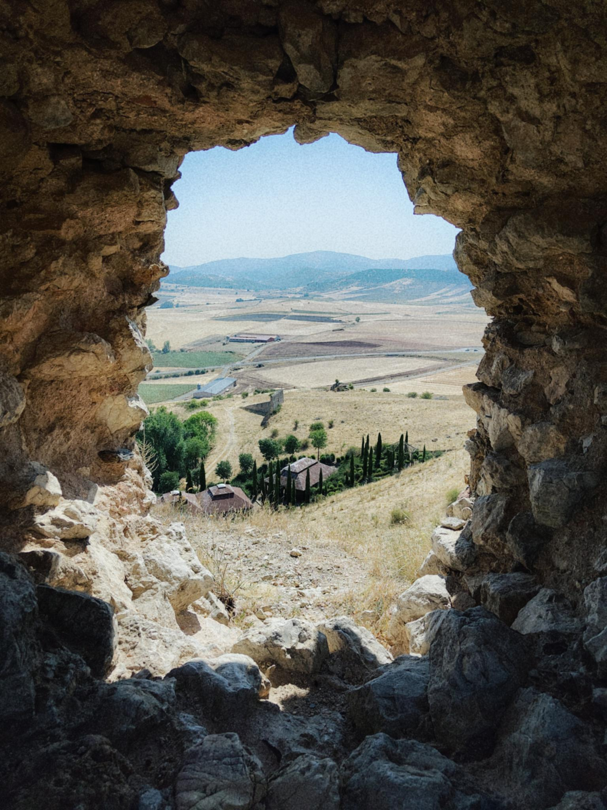
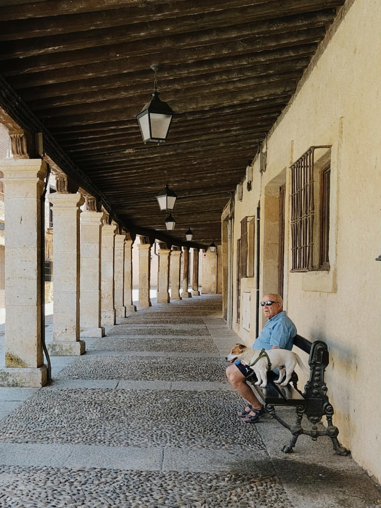
L’éclipse leur a donné un immense coup de projecteur. Des millions de personnes de partout dans le monde se sont rués vers les provinces les moins peuplées du pays. Dans la province de Soria, où l’on a passé deux nuits, les transactions avec cartes bancaires étrangères ont bondi de 220% autour du 12 août - date de l’éclipse. Booking communique une augmentation de 522% dans les recherches d’hébergement pour la même date.
Même la télévision parlait de nous : « muchos turistas extranjeros ».
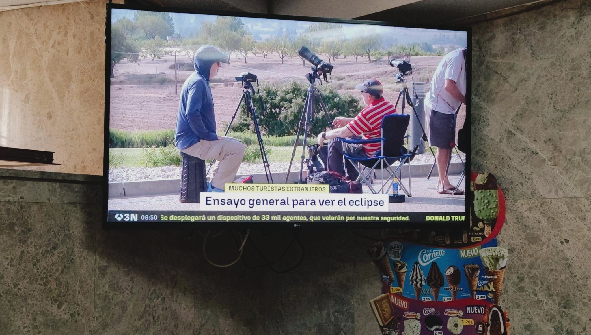
Les provinces concernées ont été à la hauteur du défi. Des bénévoles ont été mobilisés pour diriger le flux de personnes, gérer les parkings, ou simplement donner des informations au touristes. Côté transport, des navettes gratuites ont été mises en place pour desservir certains points de vue. Les températures caniculaires et la sécheresse n’ayant pas épargné l’Espagne, une des plus grosses préocupations était le risque d’incendie. En plus de l’interdiction de circulation sur certaines sections particulièrement délicates, des ambulances, pompiers et voitures de police étaient positionnés de façon à réagir rapidement en cas de besoin.
Le préamble
Nous avons profité des jours précédent l’éclipse pour visiter des chateaux-forts, cette zone en regorge d’ailleurs. Il y a les grandes stars du monde médiéval comme le château de Peñafiel qui abrite aujourd’hui le musée du vin, mais aussi d’autres qui n’ont pas eu la même chance et se trouvent en ruines en haut de collines ou au milieu des chemins de randonnée.
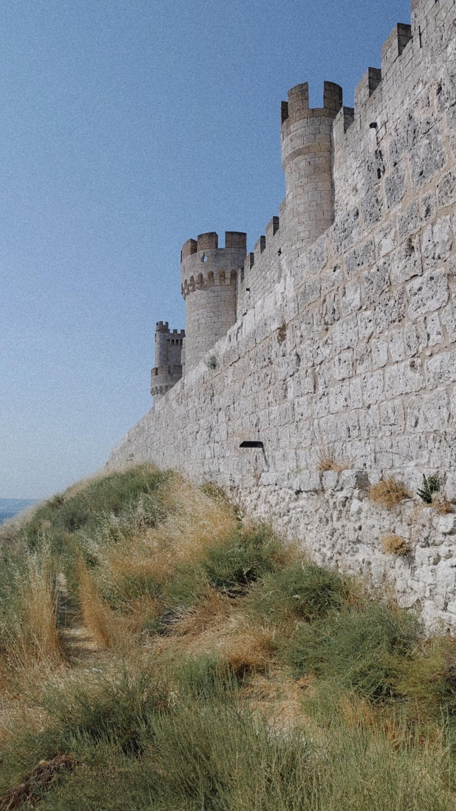
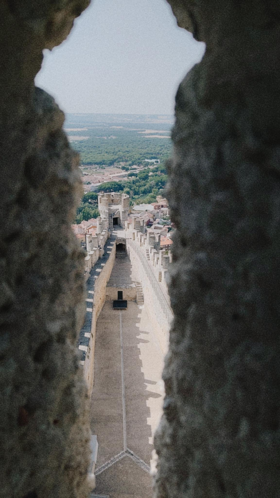
Il y a quelque chose d’étonnant à regarder ces derniers surplomber des territoires vides, secs, brûlants. C’est dur d’imaginer qu’il y a à peine quelques siècles cette même terre était le théâtre de luttes de pouvoir, avec une économie dynamique et une démographie croissante. Les donjons qui abritaient des personnes ayant droit de vie et de mort sur les autres sont aujourd’hui des ruines à moitié oubliées et accessibles à tout le monde. Comme si elles étaient originaires d’un univers lointain et que leur emplacement actuel ne leur soit pas naturel. En tout cas, plus j’apprends sur cette période de notre histoire, plus je m’estime heureux de ne pas y avoir vécu.
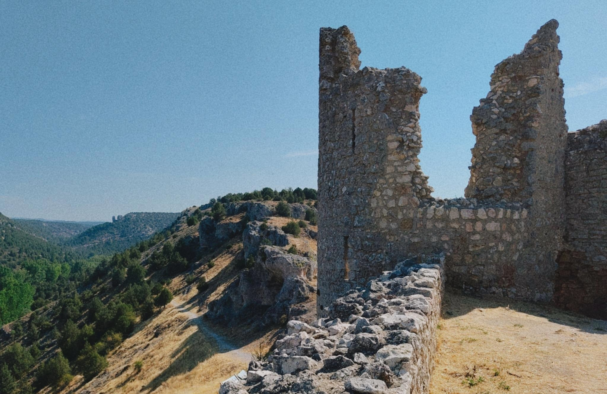
Malgré la chaleur accablante, nous ne sommes pas les seuls fous à être dehors. On croise d’autres chasseurs d’éclipses dont un écossais qui en est à son 9ème. Avec sa compagne ils laissent carte blanche au phénomène pour décider leurs vacances à leur place. Ils se sont déjà retrouvés au milieu du désert à Durango, Mexique en 1991, dans un bateau au milieu de la mer de Chine en 2009 (jour où d’ailleurs c’était nuageux), et en haut du Cerro del Castillo, Espagne, au beau milieu de cet été caniculaire de 2026. Nous avons aussi vu un groupe de britanniques avec des t-shirts “Éclipse 2026” sur mesure pour l’occasion. On aurait dit une équipe sportive qui cherchait minutieusement le meilleur emplacement pour le spectacle.
Au milieu de tout ça la vie continuait pour les locaux, souvent reconnaissables par leur sweat manches longues même par 35°. Comme pour ce vendeur de fruits et légumes qui n’a pas voulu courir le risque de prendre froid.
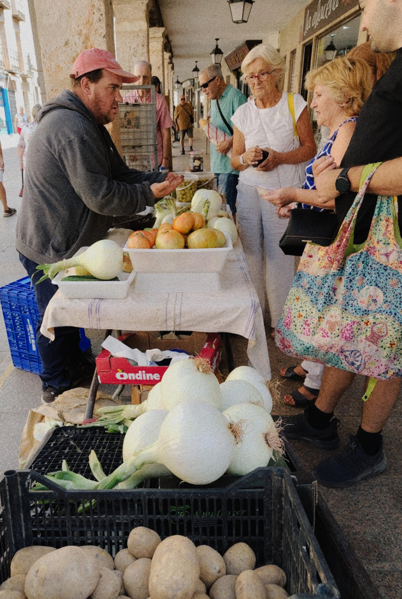
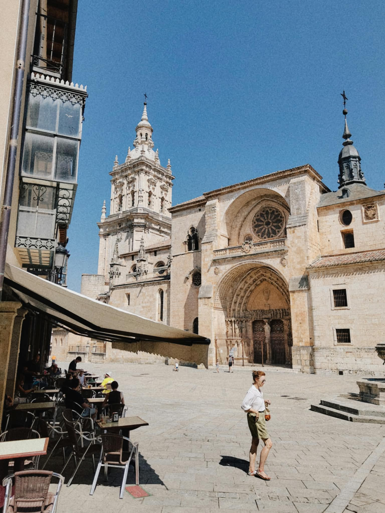
Carré or
Nous avons trouvé le poste idéal pour regarder l’éclipse à quelques kilomètres de Retortillo de Soria. Vue dégagée vers l’ouest, pas de nuages à l’horizon et un arbre sous lequel s’abriter pour pique-niquer en attendant. Il n’y avait pas le moindre humain en vue à part nous deux. Seule une rangée d’éoliennes côté sud nous rappelait qu’on est dans une planète peuplée. Même quand le tourisme est à son sommet historique, l’Espagne vide est vraiment, vraiment vide.
Plus qu’a régler les appareils et à attendre.
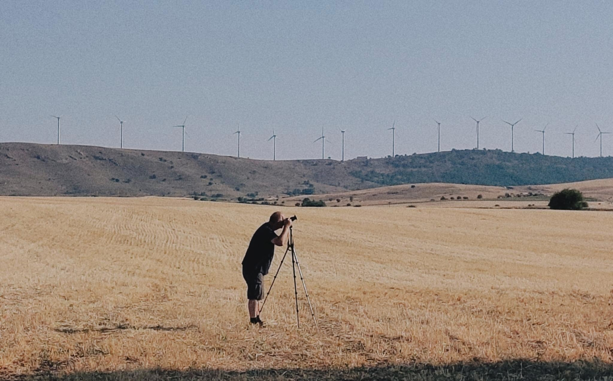
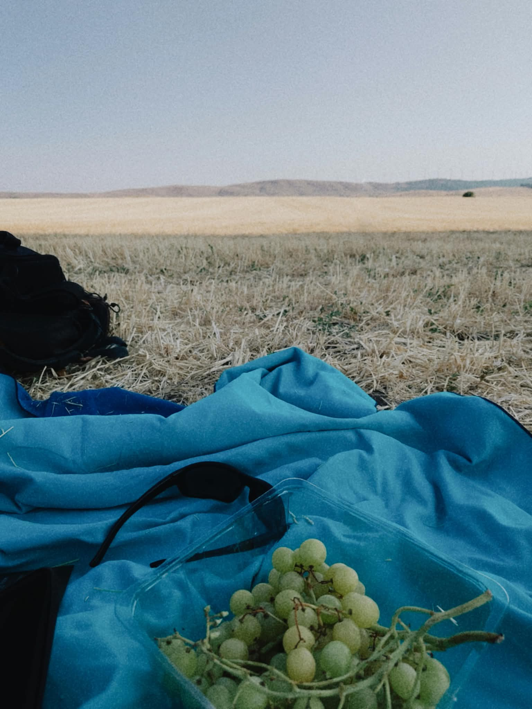
L’éclipse arrive avec une ponctualité irréprochable. Les lunettes sont nécessaires pour voir l’avancement de la Lune à l’intérieur du cercle solaire. Sans les lunettes je pense que je ne remarquerais même pas quelque chose d’inhabituel. Les rayons du soleil, même quand il est partiellement caché, sont beaucoup trop forts. Vers la fin de cette étape croissante la lumière est bien tamisée, la température un peu plus basse et on commence à sentir quelque chose de différent dans l’ambience générale. Cette étape a duré une bonne heure.
La totalité
C’est au moment où l’éclipse arrive à 100% que tout change. On est transportés à un autre monde. Les lumières s’éteignent, il est nuit, ou au moins quelque chose qui lui ressemble. Sauf qu’un énorme disque orné d’une courone est suspendu au ciel. Les oiseaux s’agitent, confus, désorientés. Ils tentent tant bien que mal de comprendre ce qui se passe. Certains décident de se refugier dans des branches des arbres. Les insectes nocturnes commencent leur concert. Le monde devient fou.
Et moi je suis comme hypnotisé, complètement ébloui. C’est d’une beauté épatante. Même en sachant précisément ce que j’ai devant les yeux, je ne peux pas m’empêcher d’être ému. Comme si une partie primitive de mon cerveau de singe cherchait des explications sans les trouver et finissait par déclencher toutes les émotions à sa disposition.
Je sais que c’est inutile de prendre une photo. Déjà car elle ne rendra jamais justice à ce que je vois, un peu comme quand on tente de faire un cliché de la lune pleine pour se retrouver avec une image d’un petit point lumineux. De plus, j’ai un expert à côté de moi avec du matériel adapté qui obtiendra des résultats bien meilleurs de ce que je peux espèrer à faire moi-même. Mais je le fais quand même, pour me rappeler de ce moment. À part ce bref instant, je reste les yeux scotchés au ciel.
Le show était fini en à peine une minute et demie. Je n’avais qu’une envie : le revoir. Ça sera pour l’année prochaine, peut-être. Pour l’instant il faudrait trouver notre dîner.
L’éclipse était au centre de la conversation dans le petit restaurant où l’on a finit par trouver une table. « L’as-tu vu ? » était la question posée partout. Pour certains ce fut malheureusement impossible : il y avait match Real Madrid - La Coruña en même temps.
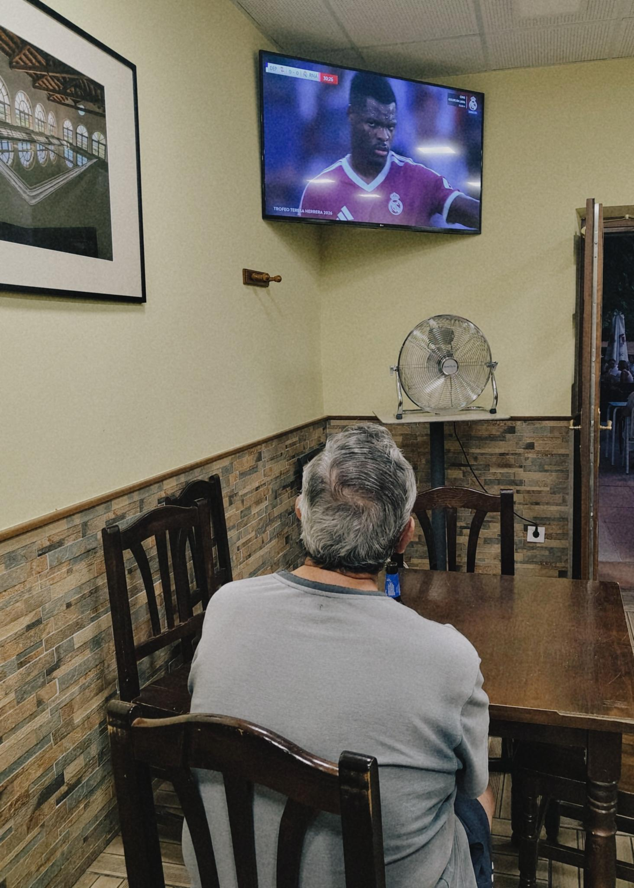
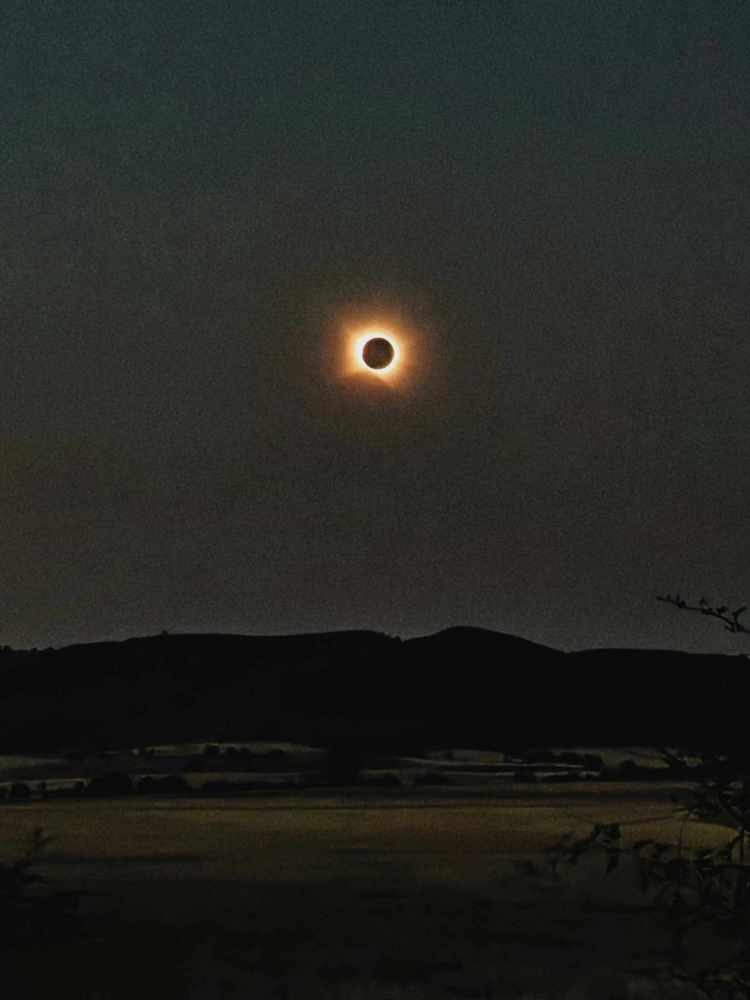
L’après
Un ami m’a fait savoir par la suite qu’en Chine antique, vers 2000 avant notre ère, deux astronomes impériaux ont été exécutés pour ne pas avoir réussi à prédire une éclipse. Il semblerait aussi que le conflit entre les Lydians et les Mèdes en 585 s’arrêta en raison d’une autre éclipse solaire. Il y a même des théories selons lesquels les origines de certaines réligions majeures sont liées à ces événements cosmiques. Des vies, et peut-être le cours de l’humanité tout entière, ont été affectées par méconnaissance ou interprétations erronées des phénomènes scientifiques.
Le monde physique a ça de fâcheux qu’il ne se soucie pas de l’être humain. Les évènements cosmiques arrivent imperturbables et indifférents aux mythes humains et aux conséquences qu’ils entraînent.
Finalement on n’est peut-être pas si éloignés de l’humanité qui a construit les chateaux-forts. Nous aussi on a nos mythes. On ne pense plus que l’éclipse est un monstre dévorant le soleil. On pense plutôt qu’on peut avoir une croissance infini dans un monde fini. Qu’une technologie verte finira bien par arriver et nous sauver. Que nous pouvons continuer à faire les choses comme avant, pas besoin d’un écologie “punitive”. Et entre-temps, le monde physique avance imperturbable et indifférent à nos mythes et ses conséquences.
Tout au long de ce voyage cette réalité restait présente. Les feux ravagaient encore l’Europe, une surmortalité de 7300 personnes a été recensée pendant les canicules juste en France, et les endroits qu’on visitait étaient profondement marqués par le changement climatique : fleuves assechés, pertes agricoles, forets brulés.
Qui sait, peut-être que celui-ci inspirera une plus grande confiance en la communauté scientifique. Peut-être que les images d’une Espagne assechée marqueront les consciences. Peut-être qu’on ajoutera à la liste de fun facts sur les éclipses que celui de 2026 a signalé le début d’un réveil écologique. On croise les doigts.
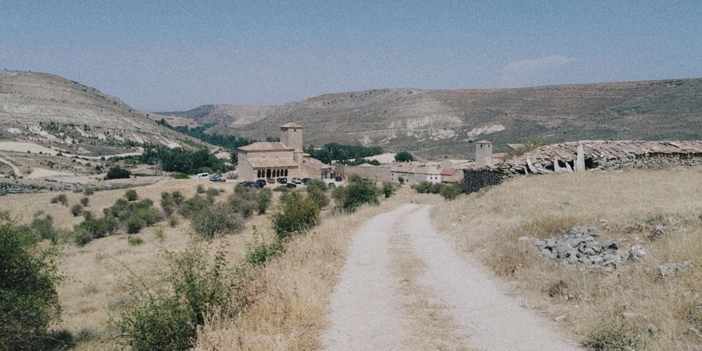